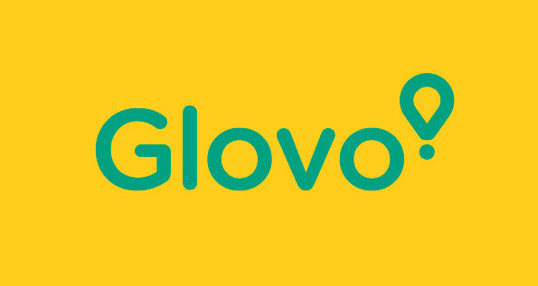
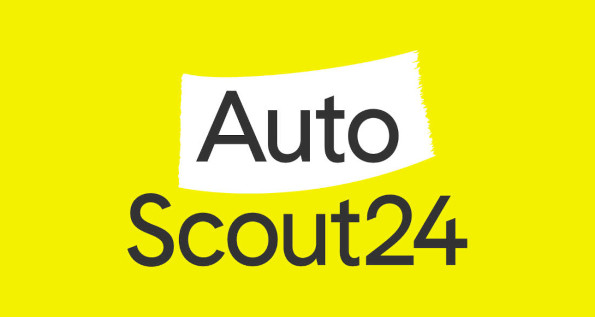
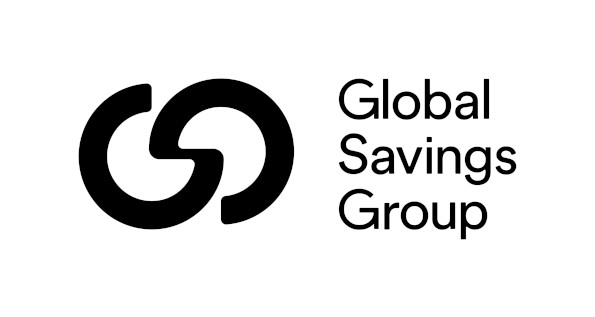
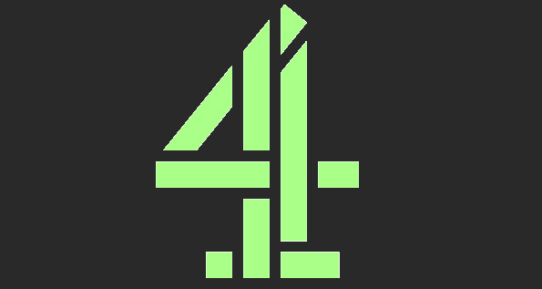
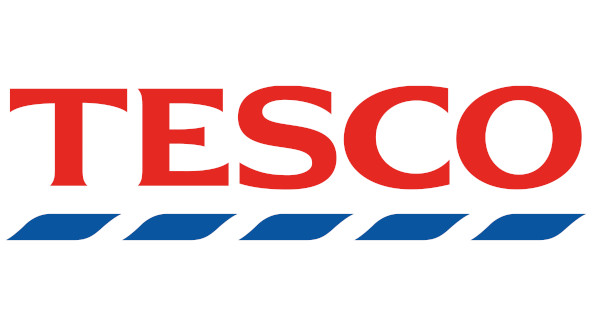
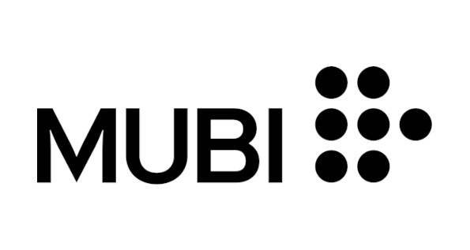
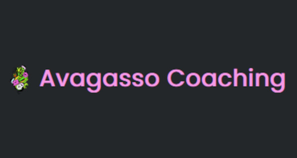

Engineering leader with end-to-end ownership of mobile platforms — spanning architecture, technical strategy, and team-building — underpinned by a people-first leadership style and a strong focus on Developer Experience (DevEx). Thirteen years as a mobile engineer, the last seven dedicated to leadership, architecture, and empowering mobile engineering teams. I now operate as the senior technical authority for mobile engineering across a multi-platform organisation, staying close to code while driving the people-first leadership needed to build and scale a growing engineering function.
Technical: Kotlin, Swift, Jetpack Compose, SwiftUI, AWS (current); Kotlin Multiplatform, React Native, Flutter (cross-platform, earlier consultancy work)
Regular London theatregoer and West End musical fan — a personal passion that dovetails neatly with my current role building the ticketing technology that gets other people into those same seats.
More broadly, a lover of storytelling in all its forms, from graphic novels to musicals, and the impact well-crafted stories can have on people. French/European style Bande Dessinée has a special place in my heart — I was part of a society during University and helped organise a yearly convention with authors coming to showcase their work and meet fans.
When I want to play around with tech, I enjoy tinkering with my own self-hosted services. I have my own server running and regularly experiment with various means to avoid relying on the Tech Giants' solutions.
ATG Entertainment — 71 venues across the UK, US, and Continental Europe, including 10 West End and 7 Broadway theatres; operator of atgtickets.com, serving 18M+ theatre-ticket buyers a year.

Scaled the mobile engineering team from 8 to 80 engineers, building mobile platform support and enabling efficient workflows: automated releases, observability platforms, cloud builds, remote caching, and more.
Ran a 6-week consultancy engagement: stakeholder interviews, code reviews, and process analysis, developing strategies to improve the volume and quality of mobile team output.
Delivered a 2-week consultancy to identify the best cross-platform mobile technology for their context, improving operational efficiency through structured interviews and solution analysis.
Developed Android and Chromecast experiences with native video playback, DRM support, and seamless content-ad transitions.
Worked on the Hudl Tablet shopping experience, Hudl 2 AOSP modifications, and child-safe application development; conducted R&D on a mobile till/payment system using the Hudl 2 tablet and a Bluetooth card reader.
Built movie-streaming application experiences across mobile, tablet, and TV.
Decided to take this 6 months leadership training program to level up my leadership style and capabilities. Through the coaching and training I cemented my values, improved my coaching capabilities and learned how to lead with authenticity. This allowed me to become more confident in Driving with values and becoming a people first leader and coach.